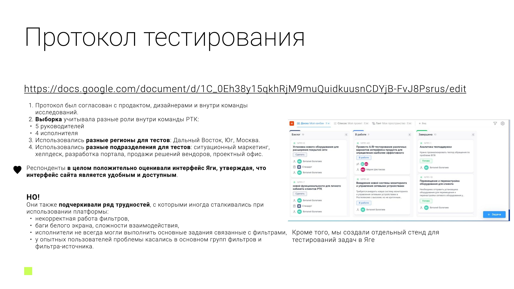

4 из 5 руководителей не справились с базовой задачей на фильтры - и не поняли, почему.

Юзабилити-тестирование фильтров руководителя проекта и рядового сотрудника плюс глубинные интервью о целевом и нецелевом использовании. Респондентов набирали в разных регионах (Дальний Восток, Юг, Москва) и подразделениях.
Задача «поделиться группой фильтров»: из 5 руководителей 4 не справились. Есть баг - при обновлении страницы включённые/выключенные фильтры и группы слетают, из-за чего люди теряют доступ к доске.
Задача «настроить фильтр-источник»: снова 4 из 5 руководителей не справились. Пользователи интуитивно не понимают, что ограничения по задаче находятся в общих настройках системы - ожидают, что такая функция будет работать точечно, для конкретной задачи.
Название «Группы» не считывается как связанное с фильтрами - часть пользователей путают группы фильтров с другими сущностями интерфейса.
По итогам тестирования (4 из 5 провалов на обеих задачах) рекомендовали сразу включать тогл публичности при создании группы фильтров и перенести фильтр-источник из общих настроек в раздел команды - с созданием прямо при постановке задачи, а не отдельным действием.